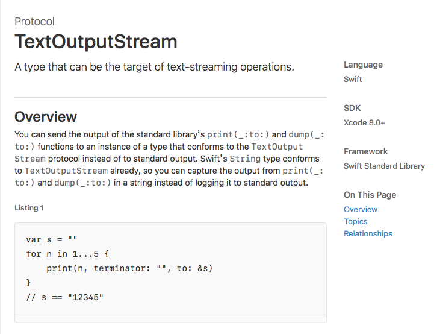
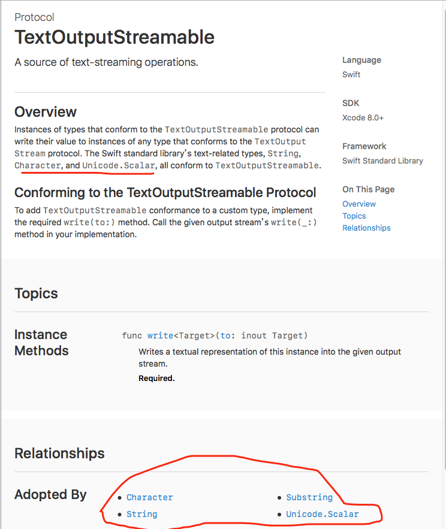
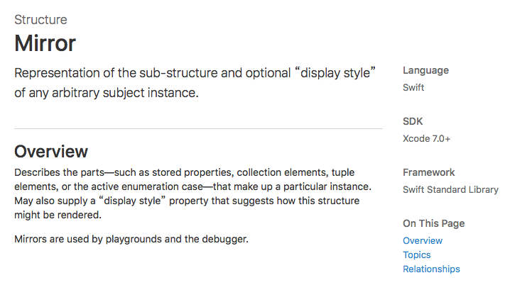

这是Swift源码 系列第三篇，我们常用的Print函数的源码
####定义
Swift 对Print.的定义
核心函数：
1 | @inline(never) |
@inline(never) 说明了这个函数 never 编译成 inline 的形式，@inline(__always) 则刚好相反。
separator 和 terminator 两个参数，按照注释就是分割符和终止符
注释示意：
1 | separator: A string to print between each item. The default is a single space (`" "`). |
举个栗子：
1 | print("swift 4.x", terminator: "---") |
打印如下
1 | swift 4.x---Hello??Swift??2 |
默认的分隔符和终止符都可以替代
接下来
if let hook = _playgroundPrintHook{}
这句应该是判断是否playground，然后再设置相应的output，这里是用_TeeStream
来output，而如果不是playground，其他则是_Stdout。
_TeeStream
1 | internal struct _TeeStream< |
TextOutputStream是标准库内置的一个标准输出流协议，
_TeeStream(left: "", right: _Stdout())
实际上还是调用标准输出流协议_Stdout()，TextOutputStream注释如下

_print
从上面print方法最后实质上还是调用_print函数，对外则提供了一个重载的，高度可定制的print函数
1 | internal func _print<Target : TextOutputStream>( |
在正文第3行有个defer关键字，defer 是干什么用的。
在作用域方面，defer block 里的代码会在函数 return 之前执行，无论函数是从哪个分支 return 的，还是有 throw，还是自然而然走到最后一行。类似 try-catch-finally 的finally一样。多用于加锁的场景。
再次来看这部分核心代码
1 | for item in items { |
到现在来看在此函数里面，只有_ items: [Any], to output: inout Target 两个参数最为关键，也就是说只需要关心输入参数和输出到哪里，输出格式则是次要的。以上代码可以看的出来print是用来处理输出格式的，并将 items: [Any]里的元素写入到output中。
示例:
print("Hello,world!")
等价于
1 | var output = _Stdout() // 这个是output的默认值 |
那么这个output到底是什么？
####_Stdout
前面说var output = _Stdout() ，_Stdout的定义和方法简化如下：
1 | internal struct _Stdout : TextOutputStream { |
首先_Stdout继承了TextOutputStream协议，重写了write方法，
在write方法里，
if string.isEmpty { return }
判读输出为空，则提前返回；然后
if let asciiBuffer = string._core.asciiBuffer { }
是先判断是否是ascii码，_stdlib_fwrite_stdout（定义在LibcShims.cpp文件中），函数传入的分别是UnsafePointer(asciiBuffer.baseAddress!)：函数指针、asciiBuffer.count：空间大小、1：ascii码的数量，由此看来对ascii码单独进行了处理。
接下来 for循环，_Stdout是在字符串的UTF-8编码视图下，把每个字符转换成Int32类型，然后调用_stdlib_putchar_unlocked函数（也定义在LibcShims.cpp文件中），到最后是调用c定义的宏 __sputc。（本系列是不分析c 语言方法的具体实现的（其实我也不懂。。😆））
最后还有句
defer { _fixLifetime(string) }
意思是修复输出流在堆上的生命周期。
所以_Stdout是继承TextOutputStream协议的输出流。
####_print_unlocked
我们知道了_Stdout只是个输出流，实际上_print是通过_print_unlocked来输出内容的，它的定义如下(方法位于OutputSteam.swift文件中)：
1 | @_versioned |
其中有四个判断，三个关键协议判断，分别判断输出的value是否实现了指定的TextOutputTextOutputStream、CustomStringConvertible、CustomDebugStringConvertible协议，如果是，则调用该协议下writeTo方法并提前返回，而最后的_adHocPrint_unlocked是用于确保任何类型都有默认输出。
来看TextOutputTextOutputStream协议，就是上面已经说过的_TeeStream参数协议了，它的定义如下
1 | public protocol TextOutputTextOutputStream { |
TextOutputTextOutputStream协议

查看三个协议，可以看出来，如果是TextOutputTextOutputStream协议就打印出来它的值；如果实现的是CustomStringConvertible、CustomDebugStringConvertible协议，print实际打印的是description内容。
也就是说如果是可空和字符类型，直接打印，不是则继续走。
####复杂类型
其他类型调用下面方法：
1 | let mirror = Mirror(reflecting: value) |
Mirror 注释如下：

也就是说是个提供显示的渲染结构（这里就不细说了）。
各种类型的打印方法在_adHocPrint_unlocked（在OutputStream.Swift文件里）方法里，（代码在下面），主要就是一些类型判断和打印。
####总结
上面说_Stdout有个write方法可以打印，为什么还要调用_print_unlocked函数？先看下String关于协议的扩展：
1 | extension String : TextOutputTextOutputStream { |
_print_unlocked函数里面方法都是调用的write(to:)方法，实际上就是TextOutputTextOutputStream协议的方法，用于输出内容到屏幕上，_Stdout的write函数实际上会调用C语言的_stdlib_putchar_unlocked函数,但是字符串的write(to:)还是调用write方法（见extension String : TextOutputTextOutputStream）
实际上也就是
1
内容.writeTo(输出流) = 输出流.write(内容)，一般在前者内部执行后者
字符串不仅是TextOutputTextOutputStream类型还是TextOutputStream
1 | extension String : TextOutputStream { |
在print方法是一般作为可输出特性。
另：
debugPrint在发布的版本里也 会输出。
debugPrint只是更倾向于输出对象的调试信息。不管是开发环境还是测试环境都会输出的。
####实践
一、字符串输出
示例：
1 | print("Hello, world!") |
调用不带output参数的print函数，函数内部生成_Stdout类型的输出流，调用_print函数
在_print函数中国处理完separator和terminator等格式参数后，调用_print_unlocked函数处理字符串输出。
在_print_unlocked函数的第一个if判断中，因为字符串类型实现了TextOutputTextOutputStream协议，所以调用字符串的writeTo函数，写入到输出流中。
根据字符串的writeTo函数的定义，它在内部调用了输出流的write方法
_Stdout在其write方法中，调用C语言的putchar函数输出字符串的每个字符
二、标准库中其他类型输出
如果要输出一个整数，似乎和输出字符串一样简单，但其实并不是这样，我们来分析一下具体的步骤：
示例：
1 | print(123) |
调用不带output参数的print函数，函数内部生成_Stdout类型的输出流，调用_print函数
在_print函数中国处理完separator和terminator等格式参数后，调用_print_unlocked函数处理字符串输出。
截止目前和输出字符串一致，不过Int类型(以及其他除了和字符有关的几乎所有类型)没有实现TextOutputStream协议，它实现的是CustomStringConvertible协议，定义了自己的计算属性description
description是一个字符串类型，调用字符串的writeTo方法此前已经讲过，就不再赘述了。
三、自定义结构体输出
我们简单的定义一个结构体，然后尝试使用print方法输出这个结构体：
示例：
1 | struct Person { |
输出结果的可读性非常好，我们来分析一下其中的步骤：
调用不带output参数的print函数，函数内部生成_Stdout类型的输出流，调用_print函数
在_print函数中国处理完separator和terminator等格式参数后，调用_print_unlocked函数处理字符串输出。
在_print_unlocked中调用_adHocPrint函数
switch语句匹配，参数类型是结构体，执行对应case语句中的代码
前两步和输出字符串一模一样，不过由于是自定义的结构体，而且没有实现任何协议，所以在第三步骤无法满足任意一个if判断。于是调用_adHocPrint函数，这个函数可以确保任何类型都能在print方法中较好的工作。在_adHocPrint函数中也有switch判断，如果被输出的变量是一个结构体，则会执行对应的操作，
代码如下：
1 | internal func _adHocPrint_unlocked<T, TargetStream : TextOutputStream>( |
您可以仔细阅读case is Struct这一段。如果此前定义的不是结构体而是类，那么得到的结果只是TextOutputStream.PersonStruct，根据default段中的代码也很容易理解。
正是由于_adHocPrint方法，不仅仅是字符串和Swift内置的类型，任何自定义类型都可以被输出。现在您应该已经明白，为什么输出prefix用的是write方法，而输出字符串”Hello, world!”要用_print_unlocked函数了吧？这是因为在那个时候，编译器还无法判定输出内容的类型。
四、万能的String
不知道您有没有注意到一个细节，String类型的初始化函数是一个没有类型约束的范型函数，也就是说任意类型都可以用来创建一个字符串，这是因为String类型的初始化函数有一个重载为：
代码如下：
1 | extension String { |
这里的字符串不是一个可输出类型，而是作为输出流来使用。_print_unlocked将instance输出到字符串流中。
调试输出
在_print_unlocked函数中，我们看到它在输出默认值之前，一共会进行三次判断。依次检验被输出的变量是否实现了TextOutputStream、CustomStringConvertible和CustomDebugStringConvertible，只要实现了协议，就会进行相应的处理并提前退出函数。
这三个协议的优先级依次降低，也就是如果一个类型既实现了TextOutputStream协议又实现了CustomStringConvertible协议，那么将会优先调用TextOutputStream协议中定义的writeTo方法。从这个优先级顺序来看，print函数更倾向于字符串的正常输出而非调试输出。
Swift中还有一个debugPrint函数，它更倾向于输出字符串的调试信息。调用这个函数时，三个协议的优先级完全相反：
代码如下：
1 | extension PersonDebug: CustomStringConvertible, CustomDebugStringConvertible { |
刚刚我们说到，创建字符串时可以传入任意的参数value，最后的字符串的值和调用print(value)的结果完全相同，这是因为两者都会调用_print_unlocked方法。对应到debugPrint函数则有：
代码如下:
1
2
3
4
5
6extension String {
public init<T>(reflecting subject: T) {
self.init()
debugPrint(subject, terminator: "", toStream: &self)
}
}
简单来说，在_adHocPrint函数之前，这两个输出函数的调用栈是完全平行的关系
参考文档:
Swift: print() vs println() vs NSLog()
_playgroundPrintHook
Swift - Defer; defer; defer - iO
swift 的 defer 几个简单的使用场景,defer
Swift－UnsafePointer, UnsafeMutablePointer，AutoreleasingUnsafeMutablePointer
UnsafePointer
Swift 源码解读 - Print.swift
__END__
文章出处：Swift - 3 [Print.swift]
作者签名：所有伟大的事情都源于梦想，始于微不足道.
关于主题：Hexo - Live For Code
版权声明：文章除特别声明外，均采用 BY-NC-SA 许可协议，转载请注明出处